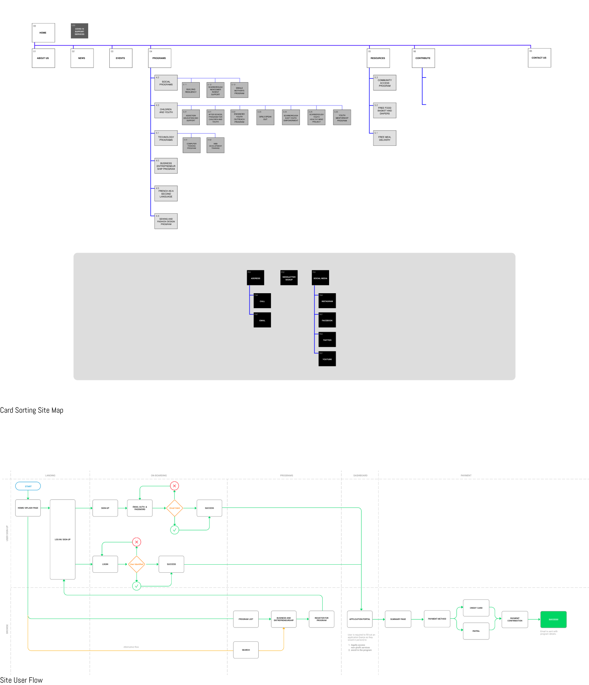

HSDC is a non-profit organization providing empowering integration resources for new immigrants, refugees and minorities in the Greater Toronto Area. Users come to this website in search of integrative programs, supportive counselling, and community resources. We want to connect users with the organization in the most seamless and beneficial way. Our roles as UI/UX Designers were to build a concept and style that ensured we provided a foundation the site could use for years to come and included focused KPIs as giudelines.
A non-profit organization established to improve the health, social, cultural, economic self-sufficiency and well-being of refugees, new immigrants, at-risk children and youth, women and other marginalized individuals through integrative and empowering programs and services.

The Problem
HSDC’s website is displaying outdated information in an unappealing way, rather than providing a valuable and seamless experience to its visitors, which is discouraging interactions with the site and increasing bounce off rates.


Intrested in cultural events & initiatives
Definition & Synthesis
Our target users were immigrants to Canada whom were/ are members of various newcomer societies. using our baseline and the 5-second test data we were able to identify key design flaws. Just focusing on the homepage viewers were greeted by a image carousel layout, in most cases this wouldn't be a problem but here it is. The carousel is so big that it doesn't leave enough room for the top navigation to be legible. The next two sections were content heavy with small font. Afterwards there is too much white space! There is no inbetween on this site and it causes viewer sensory overload. Lastly when completing the colour accessibility test it was discovered that indeed the site failed. Once we established key design flaws we moved to understanding what a user might want to gather from an organization like this. Using our data from the interviews we understood that many of these non-profit organizations provide retraining services. This means that they will give newcomers basic skills that will aid them in finding a job or switching careers. HSDC offered many different retraining opportunities but the layout of it didn't provide a deeper understanding of the class nor were users able to sign up online.
“Newcomer” Nin
- 25-year old Burmese immigrant living in Scarborough
- Wants to start her own business (PR firm)
- Getting herself familiar with available resources
- Seeking a South Asian community
Then we created our persona, Nin. Nin is a new immigrant and wants to start her own PR firm. In order to better assimilate herself with the surrounding area she uses HSDC to connect with Southeast Asians and their programs to better her future potential.
Ideation
HSDC’s website is displaying outdated information in an unappealing way, rather than providing a valuable and seamless experience to its visitors, which is discouraging interactions with the site and increasing bounce off rates. To best utilize our time and provide the most effect results we identified 4 key goals to complete.
1
Build registration process so that our users are encouraged to register online
Update and highlight relevant & important information
2
3
Newsletter signup to stay informed & build community
Access help at any time while on the site
4
These goals were supported by our initial work such as an Affinity Diagram, Competitor Analysis, an in depth Heuristic Evaluation and Redlining & Annotations. It was imperative that we create not only an aesthetically appealing site but a usable site for all levels of technological knowledge. Considering a large portion of the demographic were not proficient in English or knew it as a second language using clear and simple language throughout the site was very important. The site originally did not have a registration process and potential users would have to manually connect the HSDC. In addition, understanding that these programs were not available at the time, due to COVID, we wanted to introduce the option of online schooling programs, this started by presenting an online registration. As a young woman, Nin is quite used to utilizing online sites and she would have found the ability to connect and register in one place convenient.
Prototyping
Through our initial research we created wireframes to reflect the look and feel of the new HSDC.

We pulled inspration from various sources and created a mood board through Pintrest. This helped guide the team to better understand the feel as well as focusing the design mock-ups.
We also revitalized their branding and ensured it was accessible to all members.
Due to the fact HSDC did not have a lot of navigation and for the most part it was well organized we did not feel the need to change the navigation, but we did add navigational options into the homepage to allow for a more cohesive interaction.
We did not test the wireframes because we prioritized the homepage and registration testing.
User Testing & Outcomes
Once we completed the hi-fi prototype we introduced it to potential users, the feedback showed the 100% of users preferred our design over the original, in addition they felt the site was "more usable" in comparison to the original.

We also completed an A/B testing to specifically research the newcomer questionnaire pages.
Although we originally made the executive decision to proceed with the two page, as we believed it would overburden the user if it was on one page, most users prefer the one page, citing the two pages made the registration "feel long and drawn out".
Conclusion + Future Opportunities
Although we were unable to connect with HSDC, we are still very proud of our design. Based on our user feedback, we were able to create not only a visually appealing site, but also a value heavy site. These means users will have a positive interaction whilst able to complete their goals such as connecting with HSDC's team or signing up for one of the many different course available. Overall we wished we could share this with them as it would help bring more awareness to the group and is a huge asset when funding events and courses.